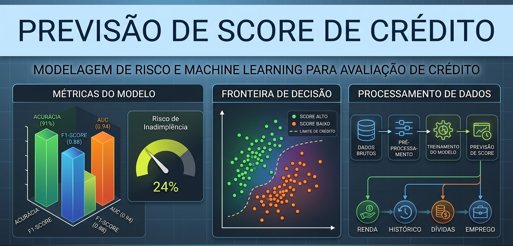

Projeto 01 • Previsão de Score
Previsão de Score de Crédito com Machine Learning
Desenvolver um modelo de Machine Learning para prever automaticamente o score de crédito de clientes bancários, com base em histórico financeiro e cadastral.
- Problema: Um banco deseja automatizar a avaliação do score de crédito de seus clientes.
- Ferramentas: Python, Pandas, Scikit-learn, XGBoost, Matplotlib, Jupyter Notebook.